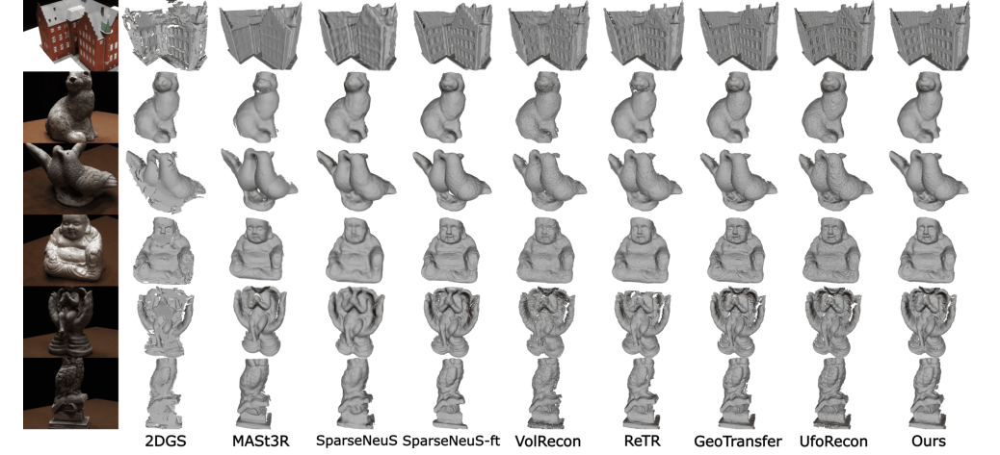
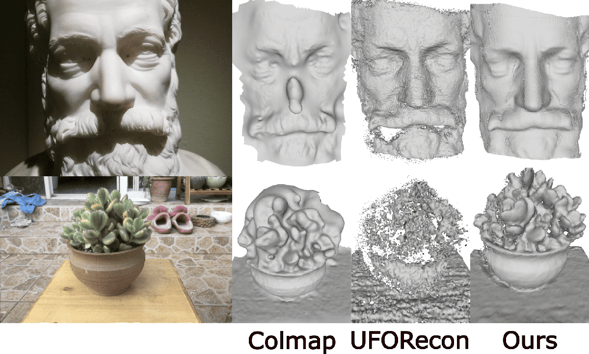
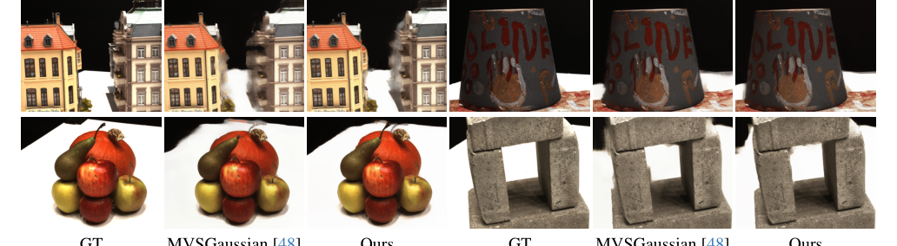

SparSplat：使用可推广的 2D 高斯 Splattin 进行快速多视图重建
简单摘要
从多视角图像恢复3D信息（多视图立体重建MVS和新视角合成NVS）是计算机视觉的核心挑战，尤其在稀疏视图设置下问题更加困难。3D高斯泼溅（3DGS）的出现使实时光真实NVS成为可能，随后2D高斯泼溅（2DGS）利用透视精确的2D高斯基元光栅化实现了精确的几何表示，在保持实时性能的同时改善了3D场景重建。近期方法利用基于MVS的可泛化学习框架回归3D高斯参数来解决稀疏实时NVS，但主要关注渲染质量而非几何精度。本文扩展了这一研究方向，首次联合处理可泛化稀疏3D重建和NVS：提出基于MVS的学习管线，以前馈方式回归2DGS表面元素参数，从稀疏视角图像同时执行3D形状重建和新视角合成。方法进一步证明了该可泛化管线可受益于现有基础多视角深度视觉特征（如MASt3R），这些特征为代价体构建提供了丰富的跨视图对应先验。所得模型在DTU稀疏3D重建基准上取得Chamfer距离最优结果，同时达到NVS最优水平，在BlendedMVS和Tanks and Temples上展现强泛化能力，推理速度比先前最优前馈稀疏重建方法快近两个数量级。

核心创新
本文的核心创新包含四个方面。第一，首次将2DGS融入可泛化前馈MVS框架，实现了联合稀疏3D重建和新视角合成——不同于以往方法仅关注渲染或仅使用3DGS（其3D椭球体在不同视角下存在几何解释歧义），2DGS的平面基元提供了多视图一致的深度和法向，为TSDF融合提取高质量网格奠定了基础。第二，提出逐像素对齐的2DGS参数回归管线：FPN提取多视图特征→基于单应性的特征变形到目标视角→DeepMVS分支通过代价体和3D卷积预测深度→像素对齐分支融合特征预测高斯属性→深度反投影获得3D位置。该管线以前馈方式端到端完成从图像到3D表面的映射。第三，系统探索了基础深度视觉特征对前馈重建的增强作用：对比了DINOv2单目特征和MASt3R多视图特征，发现MASt3R的密集局部特征（编码了输入图像间的稠密对应关系）比DINOv2更适合MVS任务，带来显著更大的性能提升。第四，引入深度失真损失和法向一致性损失正则化2DGS输出——深度失真损失集中射线上权重分布避免多峰，法向一致性损失确保2D面片与实际表面对齐，两者联合实现了高精度表面重建。
技术细节
SparSplat提出了首个基于可泛化2D Gaussian Splatting的前馈方法，从稀疏视图图像中通过单次前向传播同时实现3D重建和新视图合成。核心思路是学习一个MVS-based的可泛化模型，将输入图像映射到任意目标视图的2DGS平面表面元素参数图。
**2D高斯溅射（2DGS）基础**
3DGS将场景表示为3D各向异性高斯集合，每个高斯由中心mu、缩放s、旋转q、不透明度alpha和SH编码颜色定义。协方差Sigma=RSS^T R^T，可通过世界到相机变换矩阵W和局部仿射变换J投影到屏幕空间。渲染时将预排序的高斯投影到图像平面并通过alpha合成混合。但3D基元在不同视角下可能产生歧义——同一个2D足迹可能对应多种3D基元配置，且3D高斯投影到图像平面所用的透视仿射近似随着点远离基元中心变得不准确。
2DGS将基元表示为平面2D高斯，改善了多视图深度一致性。屏幕空间中每个高斯表示为G(u; P)，其中P为中心位置，u为屏幕空间像素坐标。射线-平面交点的UV坐标可表示为屏幕空间像素坐标的变换。射线与面片的交点具有闭式解，涉及单应矩阵H：H与面片在世界空间中的切向量t_u、t_v（由可学习的旋转q导出）、缩放因子s_u、s_v以及面片中心mu相关。之后如3DGS一样使用可学习的不透明度进行alpha混合渲染。该方法通过精确建模溅射渲染中的透视几何，获得了比3DGS更好的多视图深度一致性和3D重建质量。
**前馈2DGS参数回归管线**
给定输入图像{I_i}及其相机位姿（包含3D旋转和平移），模型预测目标视图v的像素对齐2DGS参数图：Phi_v = F({I_i}, {P_i}, P_v)。
预测管线沿用pixelSplat架构：FPN网络为每张输入图像I_i预测2D特征图。使用基于单应性的特征变形（warping），通过相对位姿P_i^{-1}P_v将特征图扭曲到目标视图。随后两个并行分支：(1)DeepMVS分支——遵循经典多视图立体匹配架构，将特征融合到代价体中，经3D卷积网络处理为概率体，得到深度预测D；(2)像素对齐预测分支——将特征池化到目标特征图F_v，经2D卷积网络和MLP映射到高斯基元属性（缩放、旋转、不透明度、颜色等）。DeepMVS深度通过相机内参反投影得到面片的3D位置属性mu：mu = unproject(D, K^{-1})，由此形成最终的完整属性图Phi_v = {mu, s, q, alpha, c}。
渲染采用2DGS的混合渲染方式。测试时重建使用TSDF深度融合：对每个视图v，使用由推断面片图Phi_v构成的高斯基元集合进行深度溅射，然后通过TSDF算法融合所有深度获得显式三角网格。
**基础模型特征集成**
为进一步提升特征质量，集成了两类深度视觉特征：
MASt3R多视图特征：MASt3R是一个在大规模数据上训练的SOTA 3D基础模型，学习在特征空间中建立图像对之间的对应关系。输入两张图像，输出稠密点图和立体特征图。对所有输入图像对运行MASt3R，每张图像的特征定义为该图像与所有其他视图组合获得的特征图的拼接：F_i^{MASt3R} = [F_{i,1}, ..., F_{i,N}]。该特征直接作为FPN网络的额外输入，丰富了代价体的特征表示，使得预测深度和后续网格重建更加准确。
DINOv2单目特征：提取图像特征图并上采样到输入分辨率：F_i^{DINO} = upsample(DINOv2(I_i))。最终FPN网络的输入为图像与其单目特征的拼接。
**多阶段训练与损失函数**
模型端到端训练，使用多视图RGB图像和真值深度作为监督，深度特征网络（MASt3R、DINOv2）保持冻结以节省计算。采用粗到细的多阶段训练过程：目标图像从邻近输入视图可微重建。
每阶段的损失函数包含：L_mse（渲染图像与真值之间的MSE损失）、L_ssim（结构相似性损失）、L_perc（感知损失，基于VGG特征）、L_depth（预测深度与真值深度之间的L1损失）、L_dist（深度失真损失，最初在Mip-NeRF 360中引入，用于集中射线上权重分布，惩罚权重分散在多峰上）以及L_normal（法向一致性损失，确保2D面片局部与实际表面几何对齐）。
深度失真损失L_dist = Sigma_{i,j} w_i w_j |z_i - z_j|，其中w_i、w_j为混合权重，z_i、z_j为沿观察方向的深度值。法向一致性损失L_normal = Sigma_i w_i (1 - n_i^T n_hat)，其中n_i为面片法向，n_hat为从渲染深度图推导的法向。
由于MVS架构采用金字塔设计，L_s表示第s阶段的损失加权组合。总损失为各阶段损失的加权和。值得注意的是，与无法在训练时渲染全图和全深度（受计算时间限制）的隐式方法不同，基于高效高斯溅射渲染的本方法能够在训练时将损失施加于整张图像。
实验结论
其次，我们对三个常用的多视图数据集（即 DTU 、 BlendedMVS 和 Tanks and Temples ）进行了定量和定性比较。最后，我们进行消融研究来评估我们提出的方法的组成部分的影响。此外，为了评估我们提出的框架的泛化能力，我们在 BlendedMVS 数据集上定性比较我们的方法，并提供 Tanks 和 Temples 数据集的一些额外示例。
在训练期间，我们使用图像分辨率 ，（源图像的数量）设置为。尽管我们尽了最大努力，我们仍无法重现他们论文中最初报告的倒角指标。此外，我们在图 1 中展示了稀疏视图重建的定性结果，表明与当前最先进的技术相比，我们重建的几何具有更具表现力和细节的表面。
| Scan | 24 | 37 | 40 | 55 | 63 | 65 | 69 | 83 | 97 | 105 | 106 | 110 | 114 | 118 | 122 |
|---|---|---|---|---|---|---|---|---|---|---|---|---|---|---|---|
| COLMAP | 0.9 | 2.89 | 1.63 | 1.08 | 2.18 | 1.94 | 1.61 | 1.3 | 2.34 | 1.28 | 1.1 | 1.42 | 0.76 | 1.17 | 1.14 |
| MVSNet | 1.05 | 2.52 | 1.71 | 1.04 | 1.45 | 1.52 | 0.88 | 1.29 | 1.38 | 1.05 | 0.91 | 0.66 | 0.61 | 1.08 | 1.16 |
| CasMVSNet | 1.03 | 2.55 | 1.60 | 0.92 | 1.51 | 1.67 | 0.81 | 1.43 | 1.22 | 1.05 | 0.83 | 0.67 | 0.54 | 0.94 | 1.10 |
| VolSDF | 4.03 | 4.21 | 6.12 | 0.91 | 8.24 | 1.73 | 2.74 | 1.82 | 5.14 | 3.09 | 2.08 | 4.81 | 0.6 | 3.51 | 2.18 |
| NeuS | 4.57 | 4.49 | 3.97 | 4.32 | 4.63 | 1.95 | 4.68 | 3.83 | 4.15 | 2.5 | 1.52 | 6.47 | 1.26 | 5.57 | 6.11 |
| 3DGS | 3.01 | 2.71 | 2.11 | 1.96 | 4.07 | 3.35 | 2.48 | 3.4 | 2.74 | 2.91 | 3.31 | 3.29 | 1.73 | 2.73 | 2.51 |
| 2DGS | 3.12 | 2.12 | 2.18 | 1.41 | 3.74 | 2.39 | 2.18 | 2.84 | 2.87 | 1.93 | 3.71 | 3.88 | 1.07 | 3.02 | 2.01 |
| MASt3R | 1.62 | 3.06 | 3.74 | 1.50 | 1.75 | 2.70 | 1.65 | 1.82 | 2.64 | 1.80 | 1.52 | 1.43 | 1.20 | 1.52 | 1.37 |
| IBRNet-ft | 1.67 | 2.97 | 2.26 | 1.56 | 2.52 | 2.30 | 1.50 | 2.05 | 2.02 | 1.73 | 1.66 | 1.63 | 1.17 | 1.84 | 1.61 |
4.1 DTU 上的稀疏视图重建
4.2 BlendedMVS 以及 Tanks 和 Temple 的概括
为了证明我们提出的方法的泛化能力，我们对 BlendedMVS 数据集进行了额外的评估，而不进行任何微调。场景和物体的高保真重建，如图1所示。肯定了我们的方法


4.3 DTU 上的新颖视图综合
我们评估 DTU 数据集上的新颖视图合成结果。我们将我们的方法与 MVSGaussian 进行定性比较（如图 2 所示）。
| @ Method | PSNR | SSIM | LPIPS |
|---|---|---|---|
| PixelNeRF | 19.31 | 0.789 | 0.382 |
| IBRNet | 26.04 | 0.917 | 0.191 |
| MVSNeRF | 26.63 | 0.931 | 0.168 |
| ENeRF | 27.61 | 0.957 | 0.089 |
| MatchNeRF | 26.91 | 0.934 | 0.159 |
| MVSGaussian | 28.21 | 0.963 | 0.076 |
| Ours | 28.33 | 0.938 | 0.073 |
4.4 消融研究
我们使用 DTU 数据集的所有测试场景作为评估，在完整的训练场景中执行以下消融研究。我们看到，与仅使用特征金字塔网络 (FPN) 提取的图像特征相比，连接 DinoV2 仅给我们带来了。然而，当使用 MASt3R 密集局部特征头的特征时，我们得到了 的提升，这表明与 DinoV2 相比，D 基础模型的特征非常适合基于 MVS 的任务。
| Features | Mean CD |
|---|---|
| Image feats | 1.17 |
| Img+DinoV2 feats | 1.16 |
| Ours (Img+MASt3R feats) | 1.04 |
4.5 推理时间
一旦我们以前馈方式推断像素对齐的 2DGS 参数，我们就可以利用它们来渲染我们的深度图，其速度比以前的可推广隐式重建方法要快得多。我们在这里提供我们的推理速度和主要基线 VolRecon 、 ReTR 、 GeoTransfer 和 UfoRecon。我们在 RTX A 上重现了这一点，并获得了我们的 s、GeoTransfer 的 s、VolRecon 的 s、ReTR 的 s 和 UfoRecon 的 s。
理解评价
如果把这篇论文放回问题背景里看，它真正的价值在于：我们提出了一种基于 MVS 的学习管道，以前馈方式回归 2DGS 表面元素参数，以从稀疏视图图像执行 D 形状重建和 NVS。这说明作者不是只补一个局部模块，而是在重新组织问题该怎样被解决。
最能支撑这个判断的，还是实验给出的证据：与基于 3DGS 的几何建模相反，该方法通过在 splat 渲染中精确建模透视来提高多视图深度一致性和 3D 重建质量。换句话说，这些设计并不只是概念上更完整，而是实实在在改变了最终结果。
当然，它离真正成熟的方案还有距离：当前方案的局限在于它仍然受制于计算资源、输入质量或场景复杂度，距离真正稳健的大规模部署还有差距。后续更值得继续推进的方向，是 未来继续提升效率、泛化能力以及在更复杂场景下的稳定性。